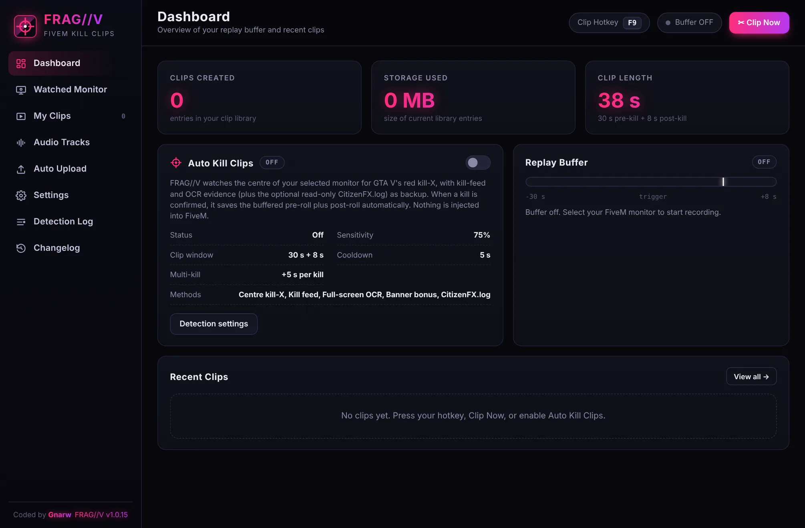
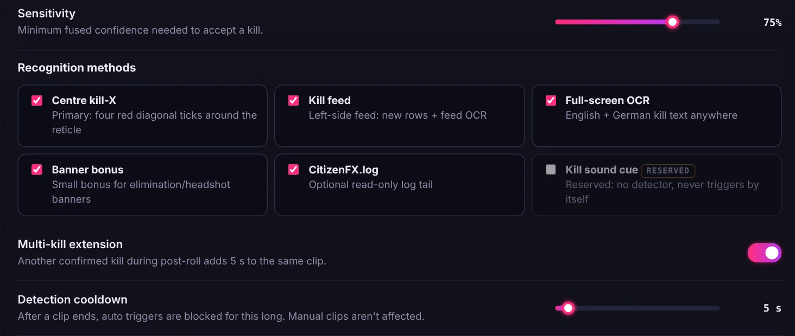
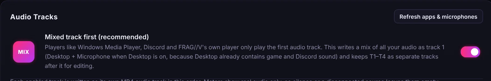

Your FiveM kills,
clipped automatically.
FRAG//V keeps a replay buffer of your game and saves the seconds around every kill as a clip. Free forever. No account, no cloud, no ads, nothing injected into GTA V.

Built for one thing: your frags
A lightweight clipper made specifically for FiveM, instead of a general-purpose app that does everything.
Automatic kill detection
Watches the centre of your screen for GTA V's red kill-X, backed up by the kill feed and text recognition. Confirmed kills are clipped on their own.
Replay buffer
The last moments are always recorded. A clip includes 30 s before the kill and 8 s after by default, and you can adjust both.
Hotkey, button or tray
Press F9 (or your own hotkey), hit Clip Now, or use the tray menu. Manual clips always work, even with auto detection off.
Four audio tracks + mix
Game, microphone, desktop and Discord each go on their own track, plus a mixed track first so every player and Discord plays your voice.
GPU recording
Uses NVIDIA NVENC, Intel Quick Sync or AMD AMF to record with almost no FPS cost. If no GPU encoder is available, it falls back to the CPU.
Your clips stay yours
MP4 files saved to your own Videos\FRAGV folder. Built-in player and library. Optional sharing to your Discord webhook, nothing else.
Knows when it's a real kill
Several independent signals are combined and checked against your sensitivity before a clip is saved.
- Centre kill-X: the four red tick marks GTA V shows around your crosshair.
- Kill feed + your name: a new feed line starting with your player name counts as strong evidence.
- Gameplay check: detection pauses when FiveM isn't the active window, and on loading screens, the pause menu or the map.
- Multi-kills: another kill during the clip adds 5 s to the same clip.

Hear yourself in every clip
The mixed track comes first, so Windows players, Discord and phones play game sound and voice together. The separate tracks stay in the file for editing.

Set up in two minutes
Install
Download and run the installer. If SmartScreen appears, click More info → Run anyway (FRAG//V isn't code-signed yet).
Pick your monitor
Choose the monitor you play FiveM on. The replay buffer starts, and there are no regions to draw.
Play
Turn on Auto Kill Clips or use your hotkey. Your clips show up in My Clips, ready to watch, trim or share.
It never touches your game
FRAG//V works like a screen recorder: it only sees your monitor and hears your audio.
- No injection into FiveM or GTA V
- No memory reading and no modified game files
- No FiveM resources, events or APIs
- Never sends input or data to the game
Clipping without strings attached
A free, local alternative to all-in-one clipping platforms.
| What you get | FRAG//V |
|---|---|
| Price | Free forever |
| Account required | No |
| Ads or paid tiers | None |
| Where clips are stored | Your PC only |
| Uploads | Only to your own Discord webhook, if you set one up |
| Made for | FiveM / GTA V kills |
Always getting better
Questions
Is FRAG//V really free?
Yes. No price, no ads, no premium version and no account. It's a hobby project.
Windows says "Windows protected your PC". Is that safe?
FRAG//V isn't signed with a paid code-signing certificate yet, so SmartScreen doesn't recognise it. Click More info → Run anyway. Only download FRAG//V from this website.
Can I get banned for using it?
FRAG//V works like OBS or any screen recorder: it never injects into the game, reads its memory or talks to FiveM. Server rules are up to each server, though, so check them if you're unsure.
Does it upload my clips anywhere?
No. Clips are saved to your own PC. The only upload is the optional Discord webhook, which you set up yourself.
What do I need to run it?
64-bit Windows 10 (version 2004 or newer) or Windows 11. An NVIDIA, Intel or AMD GPU gives the best performance. The first start needs internet once to download the text-recognition data.
Which languages does kill detection understand?
The kill-X works on any server. Kill feed and text recognition read English and German.
How do I update?
Download the latest installer here and run it. It installs over the old version and keeps your settings and clips.